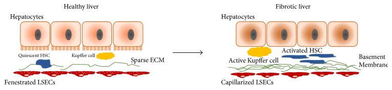
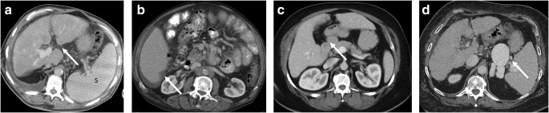
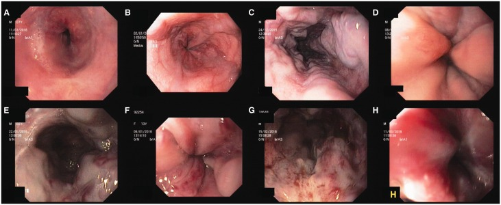
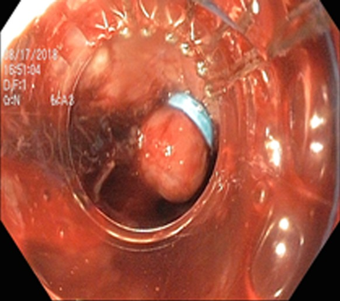

定義與定位
這個病是什麼？在分類樹的哪個位置？跟隔壁的病靠什麼分開？
| 項目 | 重點 |
|---|---|
| 本質 | 慢性肝損傷的共同終點：瀰漫性纖維化 ＋ 再生結節，取代正常肝小葉結構 |
| 兩個後果 | ① 肝細胞功能質量下降（合成、排泄、解毒）② 門脈高壓（血流阻力上升）——所有臨床表現都由這兩條生出來 |
| 台灣病因序位 | 慢性 B 型肝炎居首（見 Hepatitis B↗），其次 C 型肝炎、酒精、MASLD（見 MASLD）；C 肝 DAA 全面給付後比重明顯下降 |
| 關鍵分期 | 代償期（compensated）vs 失代償期（decompensated）——分水嶺是出現腹水、靜脈曲張出血、肝性腦病變或黃疸。中位存活從 ＞12 年掉到 ~2 年 |
| 分類位置 | 門脈高壓的「竇狀隙性（sinusoidal）」原因；竇前性（門脈血栓、血吸蟲病）與竇後性（Budd-Chiari、右心衰竭）不算肝硬化 |
病因與機制
為什麼會發生？病生理鏈條長什麼樣？——這一節寫好，下面的「臨床表現」就不用背。
flowchart TD A["慢性肝損傷<br/>病毒、酒精、代謝"] --> B["Kupffer 細胞釋出<br/>TGF-β、TNF-α、ROS"] B --> C["肝星狀細胞活化<br/>轉為肌纖維母細胞"] C --> D["分泌第一型膠原<br/>填滿 Disse space"] C --> E["星狀細胞收縮<br/>竇內阻力上升"] D --> F["竇狀內皮窗孔消失<br/>肝細胞功能下降"] D --> G["門脈高壓"] E --> G G --> H["靜脈曲張、腹水<br/>脾腫大"] G --> I["內臟血管擴張<br/>有效循環血量下降"] I --> J["失代償：HRS、SBP、HE"] classDef key fill:#263238,stroke:#000,color:#fff,font-weight:bold class G key
三種細胞的分工
| 細胞 | 平時做什麼 | 損傷後角色 | 一句話定位 |
|---|---|---|---|
| Hepatic stellate cell（Ito cell，位於 Disse space） | 儲存維生素 A | 活化 → myofibroblast：① 分泌第一型膠原 ② 本身會收縮 → 竇內阻力↑ | 執行者。纖維化＋門脈高壓的主導者 |
| Kupffer cell（肝內常駐巨噬細胞） | 清除內毒素與碎片 | 釋出 TGF-β／TNF-α／ROS 去活化星狀細胞 | 點火者。不分泌膠原、不造成阻力 |
| Sinusoidal endothelial cell | 有窗孔（fenestrae），供物質交換；分泌 NO | 發生 capillarization（窗孔消失）；NO 分泌下降 → 竇內張力↑ | 共犯。變化多半是星狀細胞活化的伴隨結果 |
| Hepatocyte | 幹全部的活 | 壞死／凋亡是啟動訊號 | 受害者，不是加害者 |

正常肝竇（左）有 fenestrated LSEC、quiescent HSC 與稀疏 ECM；纖維化（右）可見 LSEC capillarization、basement membrane、活化並拉長的 HSC，以及堆積於 Disse space 的 ECM。Source: Liver Sinusoidal Endothelial Cells in Liver Fibrosis, Fig. 1。臨床表現
典型病人長什麼樣？哪些症狀是幾乎一定有、哪些是提示性的？
- 典型：代償期常完全無症狀，多半是抽血發現血小板低或超音波看到肝表面不平而被抓出來；非特異的疲倦、食慾差
- 提示性（雌激素代謝下降 ＋ 分流）：蜘蛛痣、手掌紅斑、男性女乳、睪丸萎縮、腹壁 caput medusae、Dupuytren 攣縮、Terry's nails（白甲）、肌肉流失與肌少症
- 失代償四徵：腹水（最常見的第一個失代償事件）、靜脈曲張出血、肝性腦病變、黃疸
- 少見但重要：肝肺症候群（platypnea–orthodeoxia：坐起來反而更喘、血氧更低）、門脈肺高壓、cirrhotic cardiomyopathy（平時 EF 正常，壓力下才顯露）
→ 相關主訴流程：Jaundice、Edema、Delirium、RUQ pain
診斷
診斷標準是什麼？要開哪些檢查？哪個是 gold standard？
| 面向 | 內容 |
|---|---|
| 實驗室 | 血小板下降是最早的訊號（脾滯留 ＋ 肝製造 thrombopoietin 減少）；albumin↓、INR↑、bilirubin↑、AST/ALT ＞1、低血鈉 |
| 影像 | 超音波：肝表面結節、尾葉／左葉肥大、脾腫大 ＞12 cm、側枝循環、臍靜脈再通 |
| 彈性造影 | FibroScan LSM（Baveno VII） cACLD：＜10 排除 → 10–15 疑似 → ＞15 高度提示 CSPH：≤15 ＋ 血小板 ≥150 K → 排除；≥25 → 判定（限病毒性／酒精性、非肥胖 BMI＜30 的 MASH；肥胖型 MASLD 不適用） 免篩檢內視鏡：＜20 ＋ 血小板 ＞150 K |
| Gold standard | 肝切片（纖維化 F4）——但臨床＋影像＋彈性造影足夠時不必做 |
| 門脈壓 | hepatic venous pressure gradient (HVPG)＝肝靜脈楔壓 − 自由壓。正常 1–5；≥10 mmHg ＝ CSPH（開始長靜脈曲張、開始會失代償）；≥12 才有出血風險；急性出血時 ≥20 預示止血失敗 |
嚴重度分級：Child-Turcotte-Pugh 與 MELD
| 系統 | 變數 | 量什麼 | 用在哪 |
|---|---|---|---|
| Child-Turcotte-Pugh | 膽紅素、白蛋白、INR（或 PT 延長秒數）、腹水、肝性腦病變（記法：膽、白、凝、水、腦） | 剩餘肝功能（合成＋排泄＋解毒） | 床邊嚴重度、手術風險、靜脈曲張出血預後、某些藥能不能用 |
| MELD | 膽紅素、INR、creatinine（MELD-Na 加血鈉；MELD 3.0 再加女性與白蛋白） | 短期死亡率 | 肝移植排序（美國 OPTN 自 2023/7 改用 MELD 3.0） |
- 分級：A ＝ 5–6 分、B ＝ 7–9 分、C ＝ 10–15 分。三段要連著記，動一格就錯。
- Child-Pugh 有兩個主觀項目（腹水、腦病變）；MELD 全部客觀——這是最快的辨認法。

四位肝硬化病人的典型 CT 形態：A 為 periportal space 擴張、肝表面結節與脾腫大；B 為 right posterior hepatic notch；C 為 gallbladder fossa／肝裂增寬；D 為脾腫大與脾旁 portosystemic collaterals。整體葉段重塑常見右葉與左內側葉萎縮、尾葉與左外側葉代償性肥大；腹水與臍靜脈再通可依門脈高壓程度並存。Source: Multidetector CT for liver fibrosis, Fig. 1。鑑別診斷
要跟誰分清楚？靠什麼分？
| 要排除的 | 支持它的線索 | 怎麼排除 |
|---|---|---|
| Portal vein thrombosis↗（竇前性） | 有靜脈曲張與脾腫大，但肝功能保留、無黃疸 | 都卜勒／CT 看門脈；HVPG 正常 |
| Budd-Chiari syndrome↗（竇後性） | 腹痛＋肝腫大＋腹水三聯、發病快、常有骨髓增生性疾病 | 肝靜脈都卜勒；尾葉獨大特別明顯 |
| Heart failure／縮窄性心包炎 | 頸靜脈怒張、肝頸迴流、下肢水腫早於腹水 | 腹水 SAAG ≥1.1 但腹水總蛋白 ≥2.5（見 Ascitic fluid analysis）、心臟超音波 |
| 腹膜癌轉移／結核性腹膜炎 | 體重驟降、發燒盜汗 | SAAG ＜1.1；腹水細胞學、ADA |
| Porto-sinusoidal vascular disorder | 明顯門脈高壓但切片沒有肝硬化 | 需切片；HVPG 常僅輕度上升 |
治療
第一線是什麼？什麼情況升級？
一、治病因（唯一能讓纖維化倒退的一步）
| 病因 | 處置 |
|---|---|
| 慢性 B 肝 | 長期口服抗病毒藥（見 Hepatitis B↗）。台灣健保對肝硬化病人放寬給付，可長期使用不設療程上限 |
| 慢性 C 肝 | DAA 根除；即使已肝硬化仍應治療 |
| 酒精 | 完全戒酒——對存活的影響大過任何藥物 |
| 代謝性 | 減重 ≥10%、控制糖尿病與血脂（見 MASLD） |
| 全體 | HAV／HBV／流感／肺炎鏈球菌疫苗；蛋白質 1.2–1.5 g/kg/day ＋ 睡前點心（絕不限蛋白） |
二、門脈高壓併發症的處置骨架
| 併發症 | 一句話結論 |
|---|---|
| 靜脈曲張篩檢 | 若已因 CSPH 決定使用 NSBB（carvedilol）預防失代償，可直接免做篩檢內視鏡；不打算用 NSBB 者符合 Baveno VI criteria（LSM ＜20 kPa ＋ 血小板 ＞150 K，Baveno VII 沿用）可免做，否則應做。免做者每年追蹤 TE ＋ 血小板。分級：小 ≤5 mm／大 ＞5 mm；red wale sign ＝ 高危 |
| 一級預防 | CSPH 或有靜脈曲張 → carvedilol 為首選 NSBB（6.25–12.5 mg/day，兼具 α1 阻斷，降門脈壓較強）；不耐受或有禁忌 → 高危靜脈曲張做 EVL 結紮。詳見 Esophageal varices↗ |
| 急性靜脈曲張出血 | ① 復甦但限制性輸血，目標 Hb 7–8 g/dL ② 血管活性藥（terlipressin／somatostatin／octreotide）2–5 天 ③ 預防性抗生素 ceftriaxone 1 g/day ×7 天（降死亡率，不是可有可無）④ 12 小時內內視鏡 ＋ EVL ⑤ 失敗 → 氣囊壓迫／覆膜支架橋接 → TIPS ⑥ Child C ＜14 分、或 Child B ＞7 分（即 8–9 分）且內視鏡見活動性出血、或出血當下 HVPG ＞20 mmHg → 72 小時內（最好 ＜24 小時）pre-emptive TIPS（PTFE 覆膜支架） |
| 二級預防 | NSBB ＋ EVL 併用（單用任一者都較差） |
| 腹水 | 限鈉 ＜2 g/day（不必限水，除非 Na ＜125）＋ spironolactone : furosemide ＝ 100 : 40 起始；難治性 → 反覆大量放液（每放 1 L 補白蛋白 6–8 g）或 TIPS |
| SBP | 腹水 PMN ≥250/mm³ 即診斷（不必等培養）→ cefotaxime 2 g q8h（AASLD 2021 寫 q12h；RCT 顯示 4 g/day 與 8 g/day 同效，q8–12h 皆可）×5–7 天 ＋ 白蛋白 1.5 g/kg (D1) → 1 g/kg (D3)（降 HRS 與死亡率；AASLD／EASL 主張所有 SBP 都給，Cr ＞1、BUN ＞30 或 bilirubin ＞4 者獲益最大）。二級預防：norfloxacin 400 mg qd 長期使用（直到肝移植、腹水消失或死亡）。norfloxacin 已退出美國市場，無藥時 ciprofloxacin 500 mg qd 可替代。詳見 SBP↗、Ascitic fluid analysis |
| 肝性腦病變 | 先找誘因（感染、出血、電解質、便祕、藥物），lactulose 第一線、rifaximin 加成。完整見 Hepatic encephalopathy |
| HCC 監測 | 每 6 個月腹部超音波 ± AFP。見 HCC↗ |
| 根本治療 | 肝移植——依 MELD 排序。見 Liver transplantation↗ |
| F1–F3 大小與 red color signs | EVL 結紮環套上後 |
|---|---|
 |
 |
左圖 A–C 依序為 F1 小而直、F2 串珠狀、F3 粗大結節狀；E–H 顯示 red wale marks、cherry-red spots 與 diffuse redness。右圖為 EVL 後被 band 吸套形成的結紮隆起。Sources: Oesophageal and gastric varices: classification and grading, Fig. 1；Management of acute variceal hemorrhage, Fig. 7。
併發症與預後
住院時要盯什麼？出院後會怎麼樣？
Hepatorenal syndrome（HRS）— 一條鏈推出全部
| 面向 | 重點 |
|---|---|
| 診斷 | 排除性診斷。要排除低血容（補白蛋白仍無反應是與腎前性氮血症的分水嶺）、休克、腎毒性藥物、腎實質病變（蛋白尿 ＞500 mg/day、血尿、超音波異常） |
| 命名版本 | 舊：第一型（2 週內 Cr 加倍到 ＞2.5）／第二型。現行 ICA：HRS-AKI（取代舊第一型）／HRS-NAKI（取代舊第二型，2019 年後再細分 HRS-AKD 與 HRS-CKD），取消固定 Cr 門檻，改用 AKI 準則（48 小時內 Cr ↑≥0.3，或 7 天內較基準↑≥50%）以便提早治療 |
| 誘因 | SBP 是最常見的誘發因子；大量放液 ＞5 L 未補白蛋白；消化道出血、過度利尿、NSAID |
| 治療方向 | 停利尿劑與腎毒性藥 → 白蛋白 1 g/kg/day（最多 100 g）連 2 天 → 仍無反應且符合 HRS → 血管收縮劑 ＋ 白蛋白：首選 terlipressin——台灣有藥，TFDA 核准適應症為「出血性食道靜脈曲張」與「第一型肝腎症候群」（仿單沿用舊命名，即現行的 HRS-AKI），健保給付條件依健保署當期規定。無 terlipressin 時用 noradrenaline，或 midodrine ＋ octreotide ＋ 白蛋白 → 無效時 Dialysis 或 TIPS 作橋接 → 肝移植是唯一根本治療 |
| 預後 | 極差；藥物是橋接不是根治。「改善」與「根治」是兩個等級 |
其他要盯的與預後
- 要盯的併發症：Esophageal varices↗、SBP↗、Hepatic encephalopathy、HCC↗、肝肺症候群、門脈血栓、肌少症、Anemia（出血＋脾滯留＋營養）
- 預後因子：是否失代償（代償期中位存活 ＞12 年 vs 失代償 ~2 年）、Child-Pugh 分級、MELD、低血鈉、腎功能、肌少症
- 出現任何一次失代償事件就應啟動肝移植評估
禁忌與陷阱
相關連結
- Ascitic fluid analysis — SAAG 與腹水總蛋白的完整判讀（腹水題的真正主場）
- Hepatic encephalopathy — 誘因、分級與治療的完整版
- Esophageal varices↗ — 分級、EVL 與 NSBB 的細節
- SBP↗ — 診斷門檻、抗生素選擇與一級／二級預防
- HCC↗ — 肝硬化的終點之一；監測與分期
- Hepatitis B↗、MASLD — 台灣最重要的兩個上游病因
- Jaundice — 膽紅素升高的鑑別路徑
- 禁忌選項 — 跨科的「絕對不可」總表